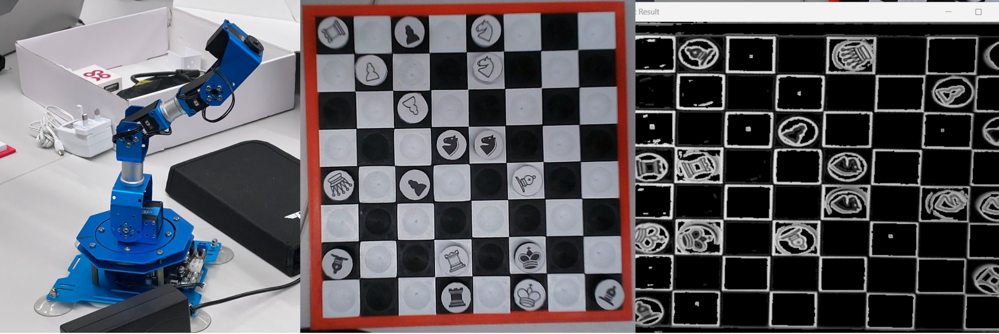

Chess Robot Arm
 Photo taken by Me
Python
OpenCV
Image Processing
GitHub
Chess Arm - Computer Vision
Status: Ongoing
Work Done
Applied computer vision techniques for achieving clear chess piece images, employing morphological gradient with bitwise operators.
Experimented with dilation and erosion processes to enhance feature extraction.
Resolving the problem of blurred image at the corners of the chessboard via adaptive thresholding
Experimenting: Canny Edge Detection
Challenges
Implementing chess piece detection on a 2D customized chessboard with magnets for robot arm movement, where conventional machine learning techniques face limitations.
Obstruction of chess pieces during robot arm movement.
Real-time processing interaction between computer vision, artificial intelligence and kinematics of the robot.